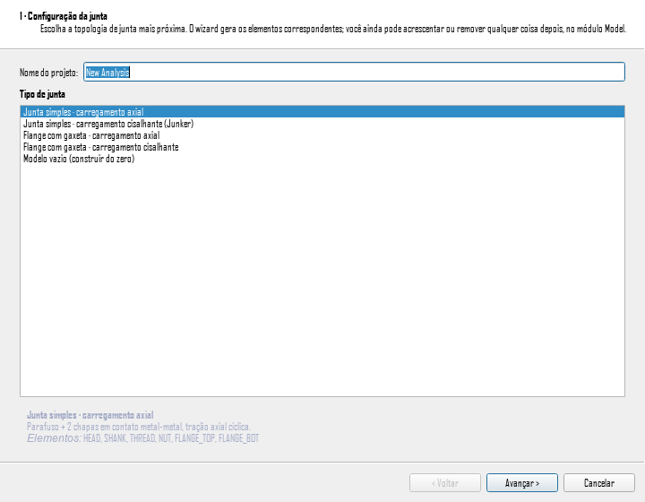

Bolt Analysis Studio 1.0.0 · Guia de uso narrado

| Controle | O que faz |
|---|---|
| Nome do projeto | Nome do modelo gerado; vazio usa o padrão. |
| Tipo de junta | Lista de topologias; a descrição e os elementos gerados aparecem abaixo. |
| Bitola do parafuso | M6 a M42; diâmetro e passo saem automaticamente. |
| Classe do material | Define escoamento e ruptura, e com eles a pré-carga em newtons. |
| Espessura do flange (cada) | Espessura de cada membro apertado. |
| Pré-carga (% escoamento) | Fração do escoamento aplicada no aperto. Setenta por cento é o típico da VDI 2230. |
| Tipo de carregamento | Transversal Junker, axial pulsante ou combinado. |
| Modo de controle | Deslocamento imposto, como numa bancada Junker, ou força imposta, como numa servo-hidráulica. O campo que não comanda fica cinza. |
| Amplitude transversal δ | Deslocamento de pico, em milímetros. Junker típico: zero vírgula três a um. |
| Amplitude da força axial | Força dinâmica de pico, em newtons. |
| Frequência / Ciclos | Frequência do ensaio e quantos ciclos simular. |
| CSV de referência | Opcional: curva de laboratório para calibração. |
| Gerar modelo | Materializa a cadeia e abre o módulo Model. |